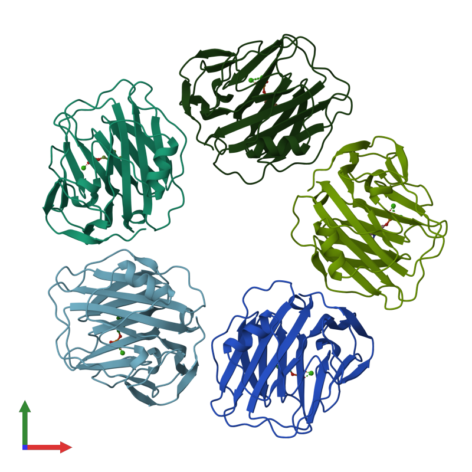

É uma proteína complexa e de alto peso molecular, sintetizada no fígado em resposta à presença de citocinas pró-inflamatórias circulantes (notadamente IL-6, IL-1β e TNF-α). Pode assumir uma forma polimérica (pentacíclica) ou monomérica, sendo a primeira um marcador inflamatório sanguíneo. Causa ativação da fagocitose de leucócitos, ativa o complemento, aumenta a migração de leucócitos (quimiotaxia) e a produção de citocinas.
Estrutura química da proteína C reativa (PCR) polimérica pentacíclica.

Fonte: https://www.ebi.ac.uk/pdbe/static/entry/1b09_deposited_chain_front_image-800x800.png